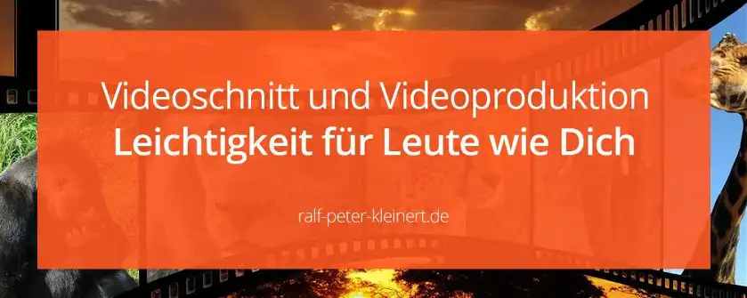

Videobearbeitung lernen, ist nicht schwer
Videoproduktion, also das Drehen und Schneiden von Videos ist schon ein Thema für sich selbst und braucht auch Erfahrung. Mit den richtigen Tipps ist Videoschnitt lernen aber kinderleicht für dich. In jedem Falle gilt,wenn du Social Media Manager werden willst: Videobearbeitung, Grafik- und Bildbearbeitung liegen sehr dicht beieinander. Und du wirst den Erfolg im Social Media Management, nur mit Bildbearbeitung sehen. Ohne Bilder ist das alles nichts, und Bilder heißt auch Video und von Vorteil wäre es, wenn du dich als angehender Social Media Manager bereits in diesem Bereich bewegen kannst. Hast du aber keine Ahnung empfehle ich: Videobearbeitung zu lernen, das ist nämlich nicht schwer.
Artikel-Vorschlag
Ich habe einen speziellen Artikel geschrieben, der dir das Video-Schneiden von Grund auf erklärt. Hier kannst du die Videobearbeitung lernen.
Es erfordert zwar Erfahrung sowie technisches Wissen, um ein Video genau so zu machen, wie du es benötigst oder der Kunde es wünscht. Aber auf Videos zu verzichten, rate ich dir nicht. Und du kannst Videoschnitt auch leicht erlernen.
und durchsuche YouTube gezielt nach Videoschnitt-Anleitungen. Und zack biste n Spielberg! Eigne dir Grundwissen an und du wirst merken wieviel Spaß es macht, wenn die Videos besser und besser werden. Alle haben mal so angefangen und deshalb wird das für dich kein Problem!
Demovideo zum Verständnis
Hier zeige ich ein Video von einem Windrad, welches ich vor kurzem gefilmt habe. Das Material ist bearbeitet, ins Format 21:9 gebracht und mit meiner eigenen Musik unterlegt. Dann habe ich noch ein paar Texte eingebaut und nun ist es ein Full-HD Video auf YouTube. Wirklich ein Kinderspiel, wenn du dir nur ein wenig Zeit nimmst.
Mit der richtigen Software Videoschnitt lernen
Bist du ein erfahrener Videoeditor, werden diese Tipps wahrscheinlich ein Lächeln in dein Gesicht zaubern und die Software DaVinci wäre interessant. Wenn du aber ganz neu in dem Thema bist, wende dich an Magix! Mit Magix Video Deluxe steigst du so leicht in die Videobearbeitung ein wie mit keinem anderen Programm! Das Windradvideo habe ich mit Magix bearbeitet und könnte den YouTube-Spezies erzählen es wäre ein Premiere-Video. Die würden alle „Toll“ sagen. Lass dich bitte nicht von YouTube Tutorials zu Software wie Adobe Premiere verleiten, wenn du neu im Videoschnitt bist. Um mit Premiere zu arbeiten, musst du nämlich richtig Ahnung haben.
Der Zuschauer sieht sowieso nicht womit du gearbeitet hast, und ehrlich, es interessiert ihn auch gar nicht. Er will ein tolles Video sehen, mehr nicht.
Wähle Magix, dein Videoschnitt wird zum Kinderspiel
Eine kostenlose Software zum Videos bearbeiten ist DaVinci Resolve. Aber Achtung! Dieses Programm ist absolute Profisoftware und es braucht Erfahrung, Videoschnitt-Wissen und technisches Wissen. Alleine das Tool zu installieren kann aufreibend sein. Du kannst überall lesen, dass die Software auch für Kinoproduktionen genutzt wird und du sie auch unbedingt benutzen solltest. Als Anfänger rate ich dir aber zu Magix Video Deluxe zu greifen, da du sonst womöglich den Spaß am Videoschnitt verlierst. Fange einfach mit Magix an und hangel dich bei Bedarf zu Premiere und DaVinci! Denn du brauchst wirklich leichte Kost, wenn du neu in der Videoproduktion bist.
Aber nochmal: Du kannst Videobearbeitung lernen, das ist nicht schwer, also keine Sorge. Bei Magix hast du Automatiken und die Software kann im Grunde auch alleine Schneiden. Video Deluxe kann dich auf einfache Art ausbilden!